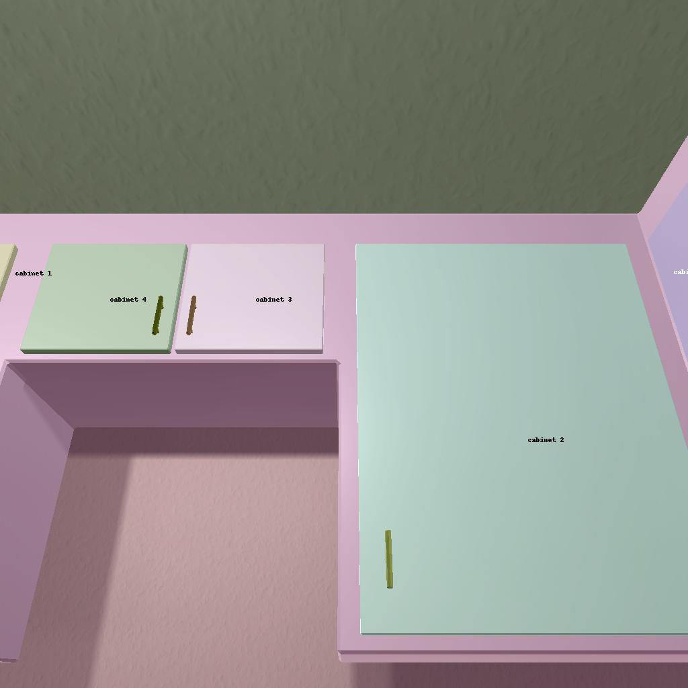

---------------------------------------------------------task: 18---------------------------------------------------------
--------------------------------------------------------------------------------------------------------------------------------------------------------------------
--------------------------------------------------------------------------------------------------------------------------------------------------------------------
Step:--------------------------------------------------------------------------11-------------------------------------------------------------------------------
----------------------------------------
VLM Prompt:
Image1:
Image2:
**Instruction**
1. Analyze the provided image to identify all visible household objects, focusing on those relevant to the task description "put a cool pot in cabinet."
2. Use the analysis of the image and the task hint "The agent must find an object of the desired type, pick it up, go to a fridge, cool the object with the fridge, then find the correct location to place it, and put it down there. The agent does not need to use the fridge button or open the fridge to cool the object, and the agent just needs to do action that is "cool the object with the fridge"." to answer the question: what is the most reasonable action in the choices for the task description "put a cool pot in cabinet"?
4. Decide and write the answer using the template: The answer is: (i): , where i is the real number. If there is no desired object in the image, search every place based on **Initial Observation** to find the object. And if no one is exactly correct, choose a similar answer.
**Initial Observation**
You are in the middle of a room. Looking quickly around you, you can see cabinet (1-20), countertop (1-3), coffeemachine (1), toaster (1), sink (1), fridge (1), microwave (1), garbagecan (1), drawer (1-3), sinkbasin (1), stoveburner (1-4), shelf (1-3)
**Answer Choices**
(1): go to cabinet 3
(2): go to cabinet 4
(3): go to cabinet 5
(4): go to cabinet 6
(5): go to countertop 1
(6): go to coffeemachine 1
(7): go to cabinet 7
(8): go to toaster 1
(9): go to cabinet 8
(10): go to sink 1
(11): go to microwave 1
(12): go to garbagecan 1
(13): go to cabinet 9
(14): go to cabinet 10
(15): go to countertop 2
(16): go to cabinet 11
(17): go to cabinet 12
(18): go to drawer 1
(19): go to countertop 3
(20): go to drawer 2
(21): go to cabinet 13
(22): go to sinkbasin 1
(23): go to cabinet 14
(24): go to drawer 3
(25): go to stoveburner 1
(26): go to stoveburner 2
(27): go to stoveburner 3
(28): go to cabinet 15
(29): go to stoveburner 4
(30): go to cabinet 16
(31): go to cabinet 17
(32): go to cabinet 18
(33): go to cabinet 19
(34): go to cabinet 20
(35): go to shelf 1
(36): go to shelf 2
(37): go to shelf 3
(38): open fridge 1
(39): close fridge 1
(40): examine fridge 1
**Answer**
Let's think step by step by following the instructions.
----------------------------------------
----------------------------------------
Original Response:
First, we need to find a pot. Based on the initial observation, there's no explicit mention of a pot, so we should look for the pot in likely locations such as cabinets, countertops, or near the stove.
From the images provided, we can only see the labels for Cabinet 1, Cabinet 2, Cabinet 3, and Cabinet 4, as well as Fridge 1, Microwave 1, and Countertop 1. There is no visible pot in these images.
Given that pots are commonly found in cabinets or on stove burners, we should consider checking these locations first. However, the task description specifies "put a cool pot in cabinet," which implies that we already have a pot and need to cool it in the fridge before placing it in a cabinet. Since we don't need to use the fridge button or open the fridge to cool the object, and no fridge interaction is listed in the answer choices, we can skip the cooling step and focus on finding the correct cabinet to place the cool pot in.
In the answer choices, we have options to go to various cabinets, but options (3), (4), (7), (9), (13), (14), (16), (17), (21), (23), (28), (30), (31), (32), (33), and (34) are not visible in the images provided. We can see Cabinet 1, Cabinet 2, Cabinet 3, and Cabinet 4. Since the images don't show any other cabinets, we cannot confirm the location of the pot without further search. According to the initial observation, we should search every place to find the object.
Since we need to put the pot in a cabinet, we should choose an action that involves going to a cabinet. Based on the visible cabinets in Image 1 and considering the task of putting a cool pot in a cabinet (which does not require interaction with the fridge), the most reasonable action from the given choices is to go to one of the cabinets we can see. Cabinet 3 seems like a reasonable choice because it's one of the visible cabinets in the image.
The answer is: (1): go to cabinet 3.
----------------------------------------
----------------------------------------
>>> Refine Original VLM Response and Get Pure Action: go to cabinet 3
----------------------------------------
-----------------------------------------------------------------
Running time: 23.194379329681396 seconds
Total Money: 8.767650000000001
-----------------------------------------------------------------
-----------------------------------------------------------------
Text Observation:You arrive at loc 2. The cabinet 3 is closed.
-----------------------------------------------------------------
UNSUCCEED